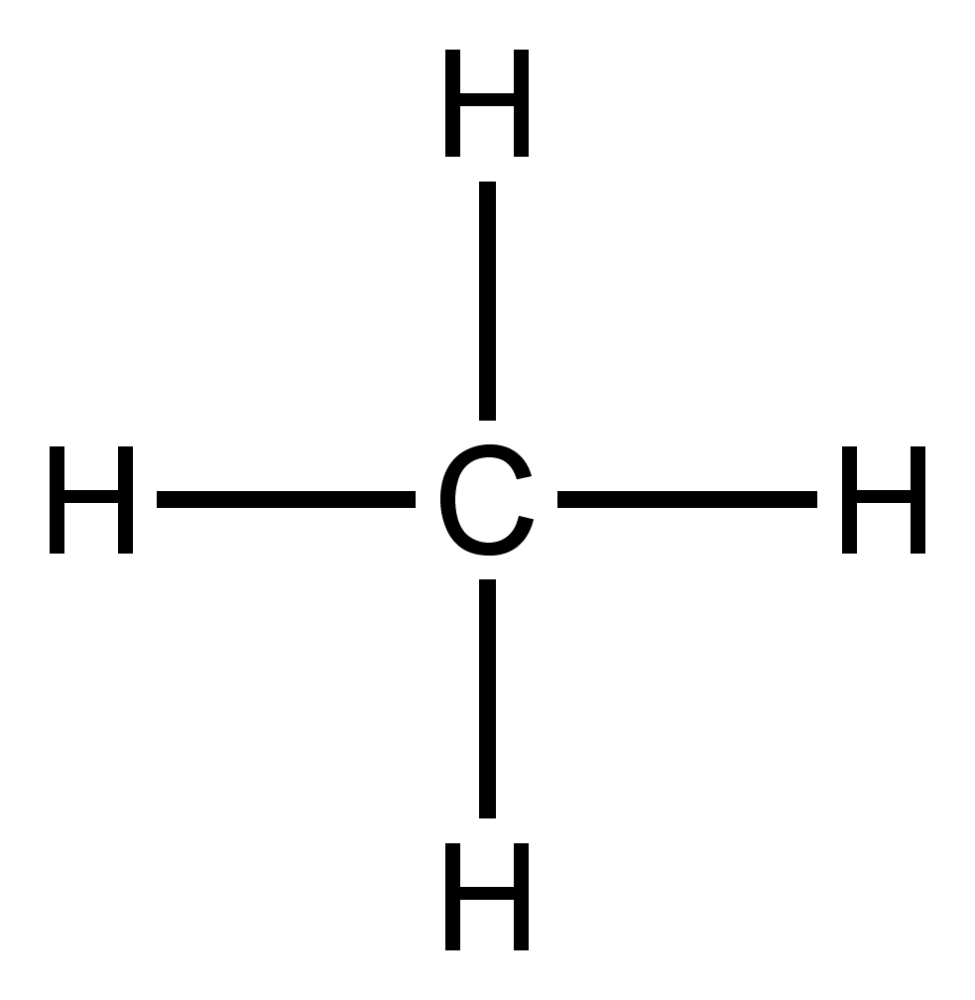
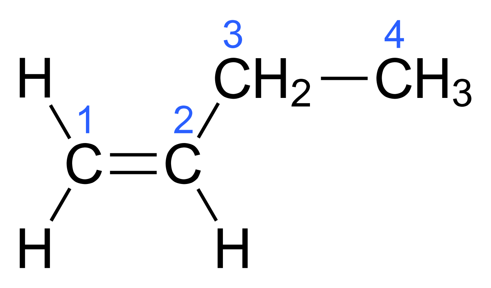
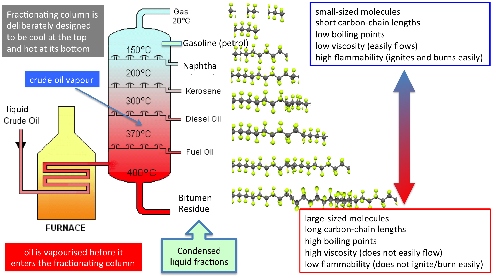
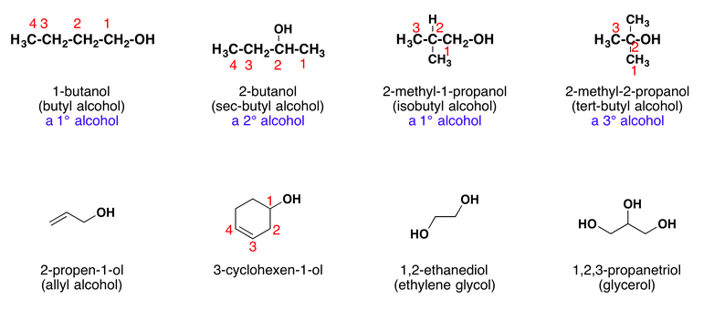
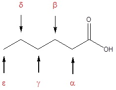
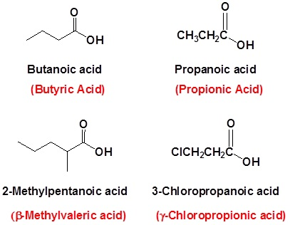
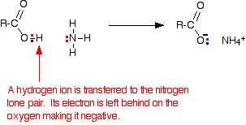

Organic Chemistry
All organic compounds contain carbon, they usually contain hydrogen and may contain other elements as well.
Millions of organic compounds are known. So we have to make groups and we have to make rules for naming them.
Homologous Series
-
Homologous series: A group of organic molecules, with similar chemical properties is called homologous series.
-
Examples
- Alkenes: Alkenes Are hydrocarbons which have only single covalent bond in their structure
- Alkanes: Alkanes are organic compounds that consist entirely of single-bonded carbon and hydrogen atoms and lack any other functional groups. The distinguishing feature of an alkane, making it distinct from other compounds that also exclusively contain carbon and hydrogen, is its lack of unsaturation.
- Alcohols: All alcohols have an -OH group and --OH
- Carboxylic acids: Carboxylic acid has an -COOH group
-
Empirical formulae: It is the simplest ratio of molecules in an atom.
Characteristics of a homologous series:
- All members have the same general formula.
- They have very similar chemical properties because they are of a same functional group.
- The physical properties change in a predictable way as the number of carbon atoms increases.
- Consecutive members in a homologous series differ by a ch2 group.
- The chain length increases by 1 each time
- As the chain gets longer, the compounds show a gradual change in properties
Name of Compounds
Name ending → compound-type name
- “ane” → alkane
- “ene” → alkene
- “ol” → alcohol
- “oic acid” → carboxylic acid
- “yl”, “oate” → ester
Saturated compounds
If the compound has a double bond or triple bonds they are known as an unsaturated compound. They do not have the maximum number of hydrogen atoms around the carbon atom.
Fuctional Groups
A group of atoms that is responsible for the characteristic reactions of a homologous series.
Alkanes
What are Alkanes ?
Alkanes are organic compounds that consist entirely of single-bonded carbon and hydrogen atoms and lack any other functional groups. The distinguishing feature of an alkane, making it distinct from other compounds that also exclusively contain carbon and hydrogen, is its lack of unsaturation. CNH2N+2 Alkanes are the only have a single covalent bond in their structor. We call then Saturated hydrocarbons, because no more atoms can be added to their molecules.
Properties of Alkanes (And alkenes)
All alkanes are composed of carbon and hydrogen atoms, and have similar bonds, structures, and formulas. The number of carbon atoms present in an alkane has no limit. Greater numbers of atoms in the molecules will lead to stronger intermolecular attractions and correspondingly different physical properties of the molecules. Properties such as melting point and boiling point (Table below) usually change smoothly and predictably as the number of carbon and hydrogen atoms in the molecules change.
| Alkane | Molecular Formula | Melting Point (°C) | Boiling Point (°C) | Phase at STP4 | Number of Structural Isomers |
|---|---|---|---|---|---|
| methane | CH4 | –182.5 | –161.5 | gas | 1 |
| ethane | C2H6 | –183.3 | –88.6 | gas | 1 |
| propane | C3H8 | –187.7 | –42.1 | gas | 1 |
| butane | C4H10 | –138.3 | –0.5 | gas | 2 |
| pentane | C5H12 | –129.7 | 36.1 | liquid | 3 |
| hexane | C6H14 | –95.3 | 68.7 | liquid | 5 |
| heptane | C7H16 | –90.6 | 98.4 | liquid | 9 |
| octane | C8H18 | –56.8 | 125.7 | liquid | 18 |
| nonane | C9H2 | –53.6 | 150.8 | liquid | 35 |
| decane | C10H22 | –29.7 | 174.0 | liquid | 75 |
| tetradecane | C14H30 | 5.9 | 253.5 | solid | 1858 |
| octadecane | C18H38 | 28.2 | 316.1 | solid | 60,523 |
Examples of Alkanes
Methane:
Propane:
Butane:
Pentane: Hexane: Heptane: Octane: Nonane: Decane:
Alkene
What are alkenes ?
An alkene is an unsaturated hydrocarbon that contains a carbon–carbon double bond.
Examples of Alkenes
Ethene:
Prophene:
Butene:
Alcohols
Methanol:
Ethanol:
Propanol:
Butanol:
Carboxylic Acids
General formulae: \(R-COOH\)
Functional group: \(COOH\)
Structural isomers
Compounds with same molecular formula but different structural formula are known as structural isomers.
Alkanes/Alkenes Note
Alkanes are the only hydrocarbon to have a single covalent bond in their structor. We call then Saturated hydrocarbons, because no more atoms can be added to their molecules.
Alkanes are generally unreactive but by in certain conditions we can subject alkanes to 2 different types of combustion. Complete and incomplete combustion. With complete combustion it produces carbon dioxide and water . Likewise, with incomplete combustion, It produces carbon monoxide and sut.
A photochemical reaction in a chlorine atom replaces a hydrogen atom in the alkane.We call this type of reaction a substitution reaction.
\(C_3H_8 + 5 O_2 = 3 CO_2 + 4 H_2O\)\(2 C_3H_8 + 7 O_2 = 6 CO + 8 H_2O\)
\(C_3H_8 + 2 O_2 = 3 C + 4 H_2O\)
Fuels
Fuels to know:
- Coal
- Natural gas: main constituent is methane
- Petroleum: a mixture of hydrocarbons which can be separated into fractions
Uses of Petroleum Fractions
- Refinery gas: bottled gas for heating and cooking
- Gasoline fraction: fuel (petrol) in cars
- Naphtha fraction: making chemicals
- Kerosene/paraffin fraction: jet fuel, lamps
- Diesel oil/gas oil fraction: fuel in diesel engines
- Fuel oil fraction: fuel in ships and home heating systems
- Lubricating fraction: lubricants, waxes and polishes
- Bitumen: making roads
Petroleum
There are three types of fossil fuels:
- Coal
- petroleum (crude oil)
- natural gas
Formation of petroleum
The formation of petroleum (or crude oil) is one of the Earth's major natural resources, the result of a process that began up to 400 million years ago. When prehistoric marine creatures died, they sank to the seabed and were Covered by mud. The change into petroleum and natural gas was brought about by high pressure, high temperature and bacteria acting over millions of years. The original organic material broke down into hydrocarbons. Compression of the mud above the hydrocarbon mixture transformed it into shale. Then geological movements and pressure changed this shale into harder rocks, squeezing out the oil and gas. The oil and gas moved upwards through the porous rocks, moving from high-pressure to low-pressure conditions. Sometimes they reached the surface, but often they became trapped by a layer of non-porous rock.
Reservoirs of oil arid has were created. These reservoirs are not lakes of oil or pockets of gas, instead, the oil or gas is spread throughout the pores in coarse rocks such as sandstone or limestone, in much the same way as water is held in a sponge.
Oilfields and gasfields are detected by a series of geological and seismic surveys. Promising areas are then drilled to gain more geological information or, if oil or gas is found, to see how extensive the old oilfield or gasfield is. Once a field is established production oil rigs can be set up, on land or at sea.
Fractional distillation
Fractions: Groups of hydrocarbons that have different boiling points. fractionating column: Where separation of the hydrocarbons takes place by fractional distillation.
Fractional distillation Petroleum is the mixture of many different hydrocarbon molecules. Most of the petroleum that is extracted from the ground is used to make fuel, but around 10% is used as a feedstock, or raw materials, in the chemical industry. Before it can be used, the various hydrocarbon molecules are separated by refining. This is done by fractional distillation at an oil refinery.
At a refinery, petroleum is separated into different fractions - groups of hydrocarbons that have different boiling points. These different boiling points are roughly related to the number of carbon atoms in the hydrocarbons.
Separation of the hydrocarbons takes place by fractional distillation using a fractionating column (or tower). At the start of the refining process, petroleum is preheated to a temperature of 350-400 °C and pumped in at the base of the tower. As it boils, the vapor passes up the tower. It passes through a series of bubble caps, and cools as it rises further up the column. The different fractions cool and condense at different temperatures, and therefore at different heights in the column. The fractions condensing at the different levels are collected on trays. Fractions from the top of the tower are called 'light' and those from the bottom 'heavy'. Each fraction contains a number of different hydrocarbons. The individual single hydrocarbons can then be obtained by further distillation.
Petroleum is first introduced to a furnace where the petroleum is first heated. Then all the hydrocarbons turn into gases. Which then the gaseous hydrocarbons are led to a tower called the fractionating column.
| Fraction | Approximate number of carbon atoms in hydrocarbons | State | Approximate boiling range / C | |
|---|---|---|---|---|
| refinery gas | 1 - 4 | C1 - C4 | liquid | below 25 |
| gasoline/petrol | 4 - 12 | C4 - C12 | liquid | 40 - 100 |
| naphtha | 7 - 14 | C7 - C14 | liquid | 90 - 150 |
| kerosene/paraffin | 12 - 16 | C9 - C16 | liquid | 150 - 240 |
| diesel oil/gas oil | 14 - 18 | C14 - C18 | liquid | 220 - 300 |
| fuel oil | 19 - 15 | C19 - C25 | liquid | 250 - 320 |
| lubricating oil | 20 - 40 | C20 - C40 | semi-liquid | 300 - 350 |
| bitumen | over 70 | > C70 | semi-liquid | above 350 |
Boiling point and viscosity increases down the group while flammability decreases.
Natural gas
Natural gas, is a naturally occurring hydrocarbon gas mixture consisting primarily of methane, but commonly including varying amounts of other higher alkanes, and sometimes a small percentage of carbon dioxide, nitrogen, hydrogen sulfide, or helium. It is formed when layers of decomposing plant and animal matter are exposed to intense heat and pressure under the surface of the Earth over millions of years.
Cracking
Is the thermal decomposition of alkenes
(in the distillation of petroleum or the like) the process of breaking down certain hydrocarbons into simpler ones of lower boiling points by means of excess heat, distillation under pressure, etc., in order to give a greater yield of low-boiling products than could be obtained by simple distillation.Compare catalytic cracking.
Reactions of alkenes
https://crab.rutgers.edu/~alroche/Ch08.pdf
Alkenes Uses
There are several uses of alkenes
-
Styrofoam Material
The double bond that differentiates between alkanes and alkenes helps in the production of styrofoam. It contributes to create foamy but light texture to the styrofoam. The connection between the atoms are slightly lose and therefore it makes styrofoam a light but flammable material.
Thus, styrofoam of alkenes compound is not recommended for closed space with no fire system suc as soundproof system. It is because the highly flammable material may spark fire and set the room in ablaze in just couple of minutes.
-
Teflon Coating
Another use of alkenes in industry people can found in teflon. The coating in teflon has polytetrafluorethene in which it also has alkenes in its compound. The coating helps to prevent the teflon to get burned and get the steel damaged in fast time. Thus, it helps to preserve the teflon, the coating for the teflon bottom also helps to stabilize the fire. The coating surely is different from contemporary frying pan that gets burned mark easily compared to teflon.
-
Artificial Ripening
The use of alkenes that common people may not know is as artificial ripening. The double bond in alkenes help to make the ripening process of fruits faster. Artificial ripening is laboratory processed additive to help farmers not to lose the unripe fruits during harvesting by letting the rest of the fruits ripe using artificial ripening. This chemical may come in liquid and used by spraying it to the fruit. In three days there usually signs of ripening on the fruit.
Calculation of Empirical Formula
-
Step 1: Obtain the mass of each element present in grams
- Element % = mass in g = m
-
Step 2: Determine the number of moles of each type of atom present
- m/atomic mass = Molar amount (M)
-
Step 3: Divide the number of moles of each element by the smallest number of moles
- M / least M value = Atomic Ratio (R)
-
Step 4: Convert numbers to whole numbers. This set of whole numbers are the subscripts in the empirical formula.
- R * whole number = Empirical Formula
Hydrogen can also be produced by cracking. Ethane -> ethene + hydrogen
Alcohols
Alcohols are one of the most important molecules in organic chemistry. They can be prepared from many different types of compounds, and they can be converted into many different types of compounds. Alcohols are molecules containing the hydroxy functional group (-OH) that is bonded to the carbon atom of an alkyl or substituted alkyl. The hydroxy functional group strongly contributes to the physical properties of alcohols.
Nomenclature of Alcohols

Properties of Alcohols
Alcohols are some of the most important molecules in organic chemistry. They can be prepared from and converted into many different types of compounds. Alcohols contain the hydroxy functional group (-OH), bonded to a carbon atom of an alkyl or substituted alkyl group. The functional group of an alcohol is the hydroxyl group, –OH. Unlike the alkyl halides, this group has two reactive covalent bonds, the C–O bond and the O–H bond. The electronegativity of oxygen is substantially greater than that of carbon and hydrogen. Consequently, the covalent bonds of this functional group are polarized so that oxygen is electron rich and both carbon and hydrogen are electrophilic.
Reactivity of Alcohols
The functional group of the alcohols is the hydroxyl group, –OH. Unlike the alkyl halides, this group has two reactive covalent bonds, the C–O bond and the O–H bond. The electronegativity of oxygen is substantially greater than that of carbon and hydrogen. Consequently, the covalent bonds of this functional group are polarized so that oxygen is electron rich and both carbon and hydrogen are electrophilic.
Uses of Alcohols
-
Use of ethanol as a fuel
Ethanol burns to produce carbon dioxide and water, as shown in the equation below, and can be used as a fuel in its own right or in mixtures with petrol (gasoline). "Gasohol" is a petrol/ethanol mixture containing approximately 10–20% ethanol. Because ethanol can be produced by fermentation, this is a useful method for countries without an oil industry to reduce the amount of petrol imports.
\(CH_3CH_2OH+3O_2→2CO_2+3H_2O\) -
Ethanol as a solvent
Ethanol is widely used as a solvent. It is relatively safe and can be used to dissolve many organic compounds that are insoluble in water. It is used, for example, in many perfumes and cosmetics.
Carboxiylic Acids
The carboxyl functional group that characterizes the carboxylic acids is unusual in that it is composed of two functional groups: (1) the carboxyl group and (2) of a hydroxyl group bonded to a carbonyl group. It is often written in condensed form as –CO2H or –COOH. Other combinations of functional groups were described previously, and significant changes in chemical behavior as a result of group interactions were described (e.g. phenol & aniline). In this case, the change in chemical and physical properties resulting from the interaction of the hydroxyl and carbonyl group are so profound that the combination is customarily treated as a distinct and different functional group.

Many carboxylic acids are called by the common names. These names were chosen by chemists to usually describe a source of where the compound is found. In common names of aldehydes, carbon atoms near the carboxyl group are often designated by Greek letters. The atom adjacent to the carbonyl function is alpha, the next removed is beta and so on.
| Formula | Common Name | IUPAC Name | Melting Point | Boiling Point |
|---|---|---|---|---|
| HCO 2H | formic acid | methanoic acid | 8.4 ºC | 101 ºC |
| CH 3 CO 2H | acetic acid | ethanoic acid | 16.6 ºC | 118 ºC |
| CH 3 CH 2 CO 2H | propionic acid | propanoic acid | -20.8 ºC | 141 ºC |
| CH 3 (CH 2 ) 2 CO 2H | butyric acid | butanoic acid | -5.5 ºC | 164 ºC |
| CH 3 (CH 2 ) 3 CO 2H | valeric acid | pentanoic acid | -34.5 ºC | 186 ºC |
| CH 3 (CH 2 ) 4 CO 2H | caproic acid | hexanoic acid | -4.0 ºC | 205 ºC |
| CH 3 (CH 2 ) 5 CO 2H | enanthic acid | heptanoic acid | -7.5 ºC | 223 ºC |
| CH 3 (CH 2 ) 6 CO 2H | caprylic acid | octanoic acid | 16.3 ºC | 239 ºC |
| CH 3 (CH 2 ) 7 CO 2H | pelargonic acid | nonanoic acid | 12.0 ºC | 253 ºC |
| CH 3 (CH 2 ) 8 CO 2H | capric acid | decanoic acid | 31.0 ºC | 219 ºC |

Properties of Carboxylic Acids
| Formula | IUPAC Name | Molecular Weight | Boiling Point | Water Solubility |
|---|---|---|---|---|
| CH 3 (CH 2 ) 2 CO 2H | butanoic acid | 88 | 164 ºC | very soluble |
| CH 3 (CH 2 ) 2 CONH 2 | butanamide | 87 | 216-220 ºC | soluble |
| CH 3 CH 2 CONHCH 3 | N-methylpropanamide | 87 | 205 -210 ºC | soluble |
| CH 3 CON(CH 3 ) 2 | N,N-dimethylethanamide | 87 | 166 ºC | very soluble |
| HCON(CH 3 )CH 2 CH 3 | N-ethyl, N-methylmethanamide | 87 | 170-180 ºC | very soluble |
| CH 3 (CH 2 ) 3CN | pentanenitrile | 83 | 141 ºC | slightly soluble |
| CH 3 CO 2CHO | ethanoic methanoic anhydride | 88 | 105-112 ºC | reacts with water |
| CH 3 CH 2 CO 2 CH 3 | methyl propanoate | 88 | 80 ºC | slightly soluble |
| CH 3 CO 2 C 2 H 5 | ethyl ethanoate | 88 | 77 ºC | moderately soluble |
| CH 3 CH 2COCl | propanoyl chloride | 92.5 | 80 ºC | reacts with water |
| CH 3 (CH 2 ) 3CHO | pentanal | 86 | 103 ºC | slightly soluble |
| CH 3 (CH 2 ) 2 COCH 3 | 2-pentanone | 86 | 102 ºC | slightly soluble |
Simple Reactions of Carboxylic Acids as Acids
The acidity of the carboxylic acids
Using the definition of an acid as a "substance which donates protons (hydrogen ions) to other things", the carboxylic acids are acidic because of the hydrogen in the -COOH group. In solution in water, a hydrogen ion is transferred from the -COOH group to a water molecule. For example, with ethanoic acid, you get an ethanoate ion formed together with a hydroxonium ion, H3O+.
This reaction is reversible and, in the case of ethanoic acid, no more than about 1% of the acid has reacted to form ions at any one time. (This is a rough-and-ready figure and varies with the concentration of the solution.)
These are therefore weak acids.
\(CH_3COOH + H_2O \rightleftharpoons CH_3COO^- + H_3O^+\)
This equation is often simplified by removing the water to:
\(CH_3COOH (aq) \rightleftharpoons CH_3COO^- (aq) + H^+\)
However, if you are going to use this second equation, you must include state symbols. They imply that the hydrogen ion is actually attached to a water molecule.
The pH of carboxylic acid solutions
The pH depends on both the concentration of the acid and how easily it loses hydrogen ions from the -COOH group. Ethanoic acid is typical of the acids where the -COOH group is attached to a simple alkyl group. Typical lab solutions have pH's in the 2 - 3 range, depending on their concentrations.
Methanoic acid is rather stronger than the other simple acids, and solutions have pH's about 0.5 pH units less than ethanoic acid of the same concentration.
Reactions of carboxylic acids with metals
Carboxylic acids react with the more reactive metals to produce a salt and hydrogen. The reactions are just the same as with acids like hydrochloric acid, except they tend to be rather slower.
For example, dilute ethanoic acid reacts with magnesium. The magnesium reacts to produce a colorless solution of magnesium ethanoate, and hydrogen is given off. If you use magnesium ribbon, the reaction is less vigorous than the same reaction with hydrochloric acid, but with magnesium powder, both are so fast that you probably wouldn't notice much difference.
\(2CH_3COOH + Mg \rightarrow (CH_3COO)_2Mg + H_2\)
Reactions of carboxylic acids With metal hydroxides
These are simple neutralisation reactions and are just the same as any other reaction in which hydrogen ions from an acid react with hydroxide ions. They are most quickly and easily represented by the equation:
\(H^+ (aq) + OH^- \rightarrow H_2O(l)\)
If you mix dilute ethanoic acid with sodium hydroxide solution, for example, you simply get a colorless solution containing sodium ethanoate. The only sign that a change has happened is that the temperature of the mixture will have increased.
This change could well be represented by the ionic equation above, but if you want it, the full equation for this particular reaction is:
\(CH_3COOH + NaOH \rightarrow CH_3COONa + H_2O\)
Reactions of carboxylic acids with carbonates and hydrogencarbonates
In both of these cases, a salt is formed together with carbon dioxide and water. Both are most easily represented by ionic equations.
For carbonates:
\(2H^+ (aq) + CO_3^{2-} \rightarrow H_2O (l) + CO_2 (g)\)
. . . and for hydrogencarbonates:
\(H^+ (aq) + HCO_3^{-} \rightarrow H_2O (l) + CO_2 (g)\)
If you pour some dilute ethanoic acid onto some white sodium carbonate or sodium hydrogencarbonate crystals, there is an immediate fizzing as carbon dioxide is produced. You end up with a colorless solution of sodium ethanoate.
With sodium carbonate, the full equation is:
\(2CH_3COOH + Na_2CO_3 \rightarrow 2CH_3COONa + H_2O + CO_2\)
. . . and for sodium hydrogencarbonate:
\(CH_3COOH + NaHCO_3 \rightarrow CH_3COONa + H_2O + CO_2\)
There is very little obvious difference in the vigor of these reactions compared with the same reactions with dilute hydrochloric acid. However, you would notice the difference if you used a slower reaction - for example with calcium carbonate in the form of a marble chip. With ethanoic acid, you would eventually produce a colorless solution of calcium ethanoate.
\(2CH_3COOH + CaCO_3 \rightarrow (CH_3COO)_2Ca + H_2O + CO_2\)
In this case, the marble chip would react noticeably more slowly with ethanoic acid than with hydrochloric acid.
Reactions of carboxylic acids with ammonia
Ethanoic acid reacts with ammonia in exactly the same way as any other acid does. It transfers a hydrogen ion to the lone pair on the nitrogen of the ammonia and forms an ammonium ion.

If you mix together a solution of ethanoic acid and a solution of ammonia, you will get a colorless solution of ammonium ethanoate.
\(CH_3COOH + NH_3 \rightarrow CH_3COONH_4\)
Uses of carboxylic acids
Producing of soaps need higher fatty acids. Soaps are usually sodium or potassium salts of higher fatty acids such as stearic acid.
The food industry uses numerous organic acids for the manufacture of soft drinks, food products etc. For instance, acetic acid is used in making vinegar. Sodium salts of organic acids find use in preservatives.
In the pharmaceutical industry organic acids are used in numerous drugs
Acetic acids are often used as a coagulant in the producing of rubber.
Organic acids find vast application in making dyestuff, perfumes, and rayon.